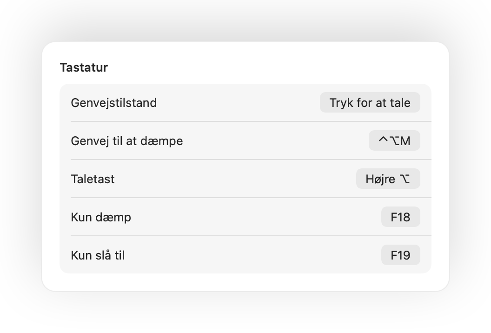
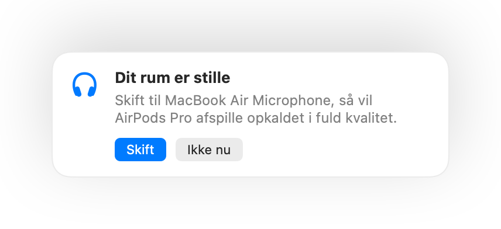

Dæmp med et tryk på dine AirPods
Under ethvert opkald skal du trykke én gang på stilken for at dæmpe og trykke igen for at slå til. Det virker selv i Chrome, hvor Google Meet og andre webmøder ignorerer trykket på AirPods.
Muffle til Mac
Tryk på dine AirPods eller brug en enkelt tastaturgenvej. Muffle slukker selve mikrofonen, så Google Meet, Zoom, Teams, Slack og alle andre apps kun møder stilhed.
Gratis i 3 dage. Derefter én betaling, intet abonnement. Til macOS 14 Sonoma og nyere.
Dæmp, vælg din mikrofon, lås dens niveau, og slå funktioner til og fra direkte fra menulinjen.
Muffle dæmper mikrofonen på hardwareniveau, så det er ligegyldigt, hvilken app, browser eller fane der bruger den.
Under ethvert opkald trykker du på stilken. Muffle slukker selve mikrofonen, så Meet, Zoom, Teams og alle andre apps intet hører.
Muffle genkender din stemme og påminder dig, inden du forklarer hele din idé til absolut ingen.

De fleste mute-knapper dæmper kun én app. Muffle slukker selve mikrofonen, så alle apps på din Mac hører stilhed.
Under ethvert opkald skal du trykke én gang på stilken for at dæmpe og trykke igen for at slå til. Det virker selv i Chrome, hvor Google Meet og andre webmøder ignorerer trykket på AirPods.
Begynder du at tale, mens mikrofonen er dæmpet, giver Muffle dig besked, inden du forklarer hele din idé til absolut ingen.

Control-Alternativ-M dæmper dig overalt, selv når opkaldet kører i en fane i baggrunden. Hold tasten nede for at tale, mens du er dæmpet, og slip for at mute igen.
En lille flydende knap viser din mikrofonstatus under samtaler. Klik på den for at dæmpe eller slå mikrofonen til.

Vælg, hvordan din genvej virker: tryk for at dæmpe eller slå til, hold nede for at tale, eller hold nede for at dæmpe ved et host. Tilføj separate taster til at dæmpe og slå til, eller hold en enkelt tast nede som f.eks. Højre ⌥ eller en ekstra museknap.

Slog du mikrofonen til for at sige en enkelt ting? Hvis du derefter er stille i den valgte tid, dæmper Muffle dig igen. Kun din stemme tæller, ikke tastetryk eller baggrundsstøj.
Med AirPods i et stille rum foreslår Muffle din Macs mikrofon, så dine AirPods afspiller opkaldet i fuld kvalitet. Når der bliver larm, foreslår den mikrofonen i dine AirPods.

Chrome, Zoom og Teams justerer ofte din mikrofon på egen hånd. Lås niveauet, så retter Muffle det straks tilbage.
Start alle opkald dæmpet, slå mikrofonen til igen, når et opkald slutter, og dæmp automatisk, hver gang du låser din Mac.

Hvis forbindelsen til dine AirPods eller dit headset ryger midt i et videomøde, dæmper Muffle lyden, før opkaldet skifter over til din Macs indbyggede mikrofon.
Dæmp fra appen Genveje, Siri, et Stream Deck, Raycast eller med en praktisk knap direkte i Kontrolcenter.
Et grønt eller rødt skær langs skærmkanterne, et farvet menulinjeikon, en svævende knap og en lyd, du kan slå fra for hver mikrofon. Slå dem til, du bedst kan lide.
Muffle optager, gemmer eller sender aldrig lyd. Appen tænder og slukker udelukkende din mikrofon og aflæser dens lydstyrke. Ingen konti, ingen analyseværktøjer og ingen sporing.
Installer Muffle fra Mac App Store, og tillad mikrofonadgang.
Deltag i et opkald i en vilkårlig app, præcis som du plejer.
Tryk på dine AirPods, tryk Control-Alternativ-M, eller klik på ikonet i menulinjen for at dæmpe.
Ja. Chrome videresender ikke dæmpetrykket fra AirPods til webopkald, så Muffle fanger trykket og dæmper selve mikrofonen. Det samme gælder for alle andre opkald i browserfaner.
Dit opkaldsprogram viser måske stadig din mikrofon som tændt, fordi Muffle slukker selve mikrofonen frem for knappen i appen. De andre deltagere hører stilhed uanset hvad. Muffle-ikonet i menulinjen bliver rødt, når du er dæmpet.
AirPods Pro, AirPods 3 og nyere samt AirPods Max, foruden Beats-modeller med opkaldsstyring. Tastaturgenvejen og menulinjen fungerer med enhver mikrofon.
Ja. Muffle virker med alle apps på din Mac, der bruger mikrofonen, både separate skrivebordsprogrammer og møder i browseren.
Nej. Prøv alle funktioner gratis i 3 dage, og lås derefter op for Muffle med et enkelt engangskøb.
macOS videresender kun tryk på AirPods til apps, der bruger mikrofonen. Muffle holder derfor en lydløs forbindelse åben under opkald. Der bliver aldrig optaget noget.
Muffle slår automatisk mikrofonen til igen, når appen lukkes, så du aldrig risikerer at være låst på lydløs.
macOS 14 Sonoma og nyere. Knappen til Kontrolcenter kræver macOS 26 eller nyere.
Ja. Vælg ”Tryk for at tale” i Indstillinger, og hold din genvej nede for at tale. Du kan også holde en enkelt tast nede som f.eks. Højre ⌥ eller fn, eller en ekstra museknap.
Når et opkald bruger mikrofonen i AirPods, skifter dine AirPods til opkaldstilstand, som afspiller lyd i lavere kvalitet. I et stille rum foreslår Muffle din Macs mikrofon i stedet, så dine AirPods bliver ved med at afspille i fuld kvalitet.
Nej. Muffle genkender tale med Apples lydanalyse på enheden, så kun tale tæller. Tastetryk, klik og baggrundsstøj gør ikke, og der optages intet.
Korte, praktiske svar på, hvordan du dæmper din mikrofon på din Mac i enhver app.
Muffle er gratis at prøve i 3 dage.